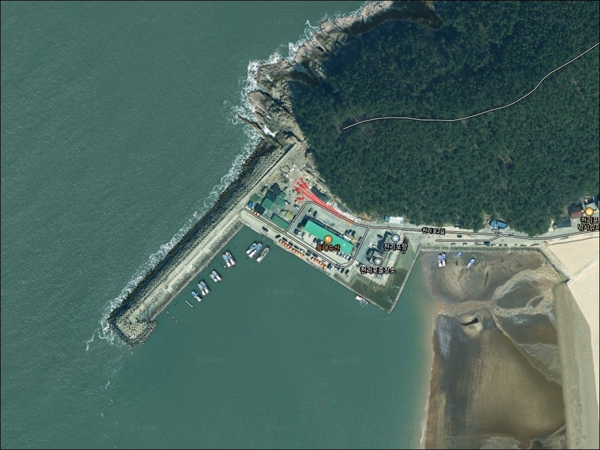
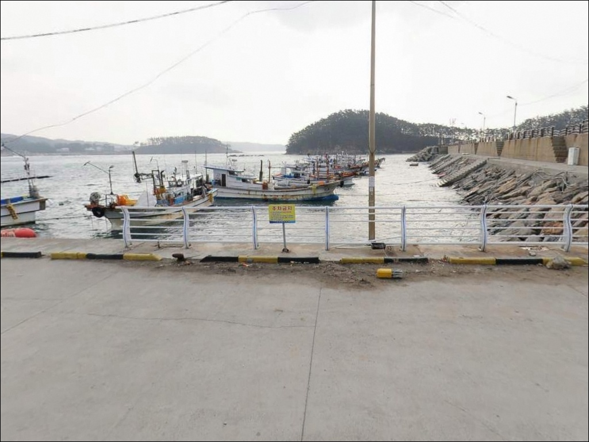
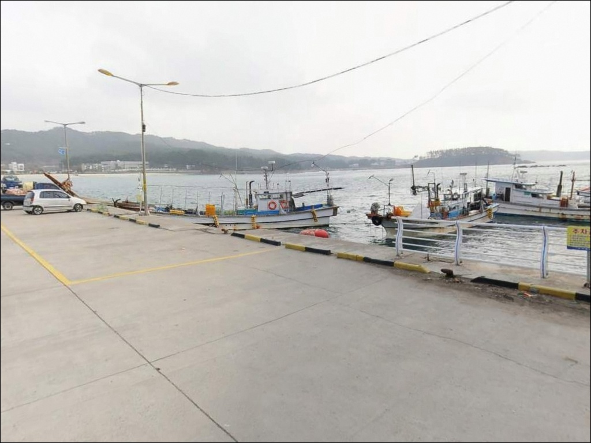
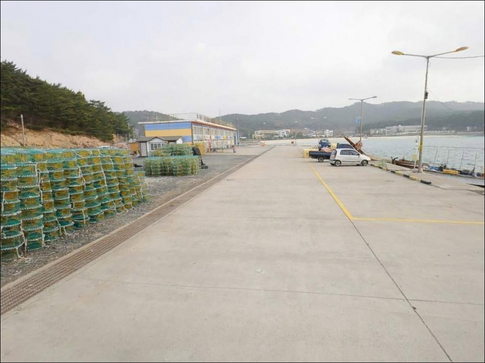
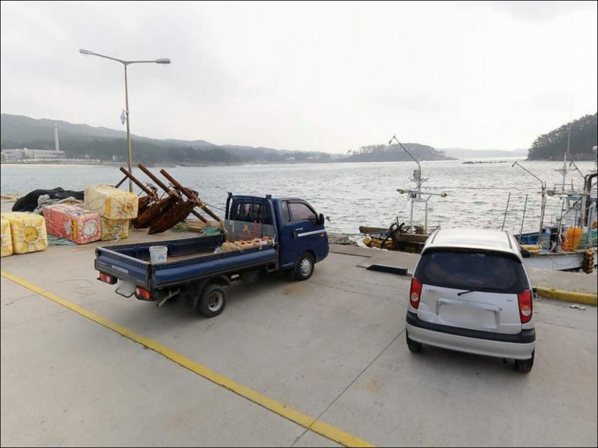
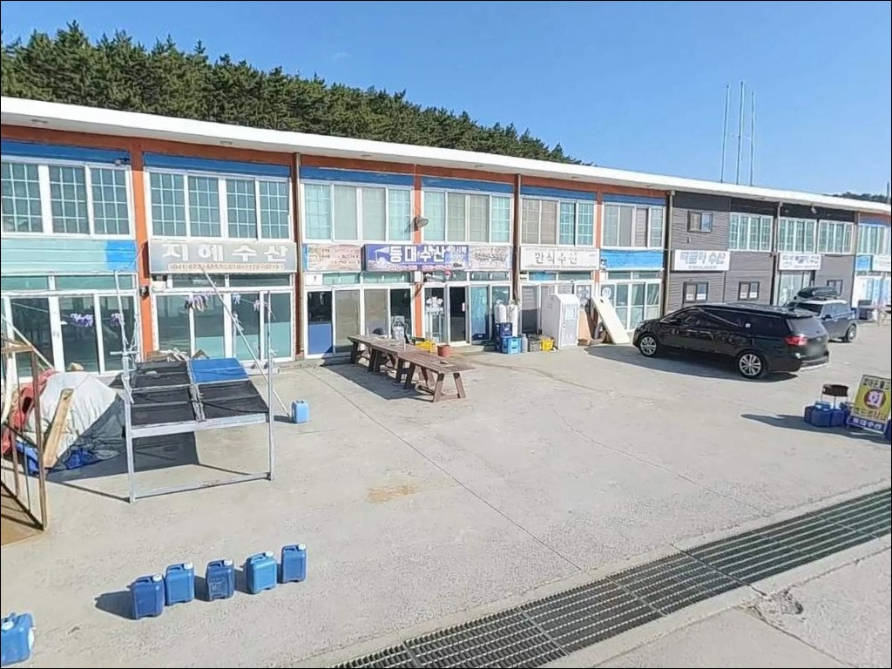
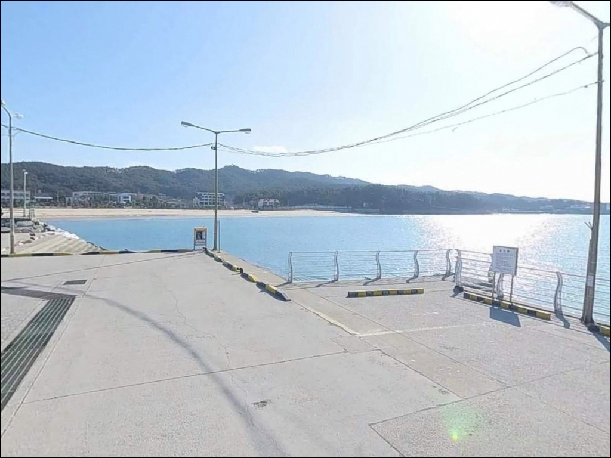
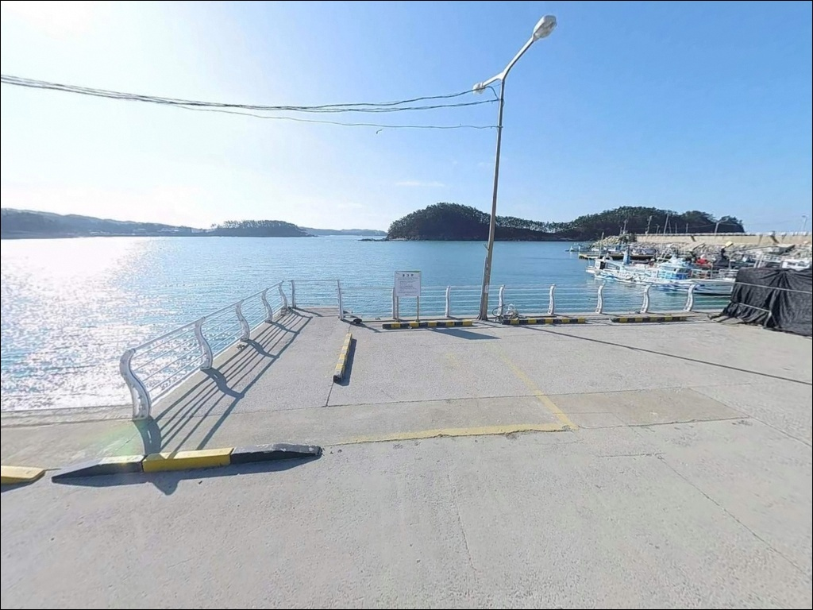
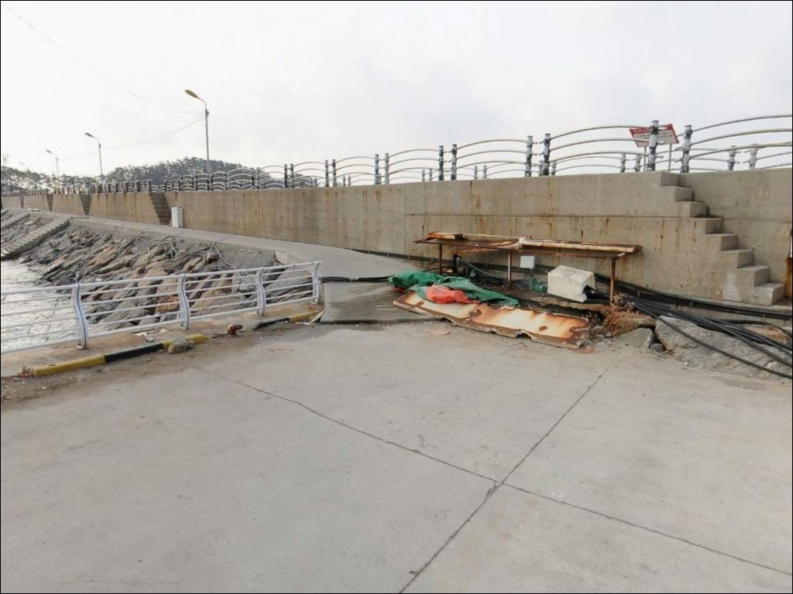

천리포항, 충남 태안군 자연 친화적 차박, 낚시 포인트
이 페이지에는 광고(제휴 링크 포함)가 있으며, 광고 링크를 통해 구매하면 운영자가 판매 수익 또는 수수료를 받을 수 있습니다. 포인트 사진: 카카오맵 스카이뷰·로드뷰. 이 페이지의 지도·사진 이미지는 카카오맵의 실제 서비스 이미지와 다를 수 있습니다.


포인트 안내
천리포항
충남 태안군 소원면 의항리 978-90
물때 확인 없이 천리포항 방파제 끝단에
자리를 잡으면
서해 조수간만의 차가 채비를
무력화하는 상황이 생깁니다.
간조 시 수심이 급격히 낮아지는 구조에서는
봉돌이 바닥을 긁거나 갯바위가 드러나
낚시 자체가 어려워지는 경우가 있습니다.
충남 태안군 소원면의 천리포항은
1972년 지정된 지방어항으로,
서쪽으로 길게 뻗은 방파제와
내항 선착장이 기본 구조를 이룹니다.
천리포해수욕장과 인접해 있어
관광지와 어촌이 혼합된 환경이며,
방파제 외항과 내항 여건이
뚜렷하게 나뉘는 포인트입니다.
이 글은
천리포항의 방파제 구조와
물때 기반 낚시 여건, 진입 환경,
차박 조건을 중심으로 정리합니다.
조황 단정이나 특정 어종 보장은
이 글의 범위에 포함되지 않습니다.

1. 진입 동선과 포인트 접근성
천리포항은 천리포해수욕장 방면에서
진입하는 도로가 기본 경로입니다.
해수욕장까지의 도로는 정비된 편이나,
항구 내부로 들어갈수록
공간이 협소해지는 구간이 나타납니다.
소형·중형 차량 기준으로는
진입 자체에 큰 부담이 없는 편입니다.
대형 SUV나 캠핑 장비를 적재한 차량이라면
항구 내측 회차 공간을 미리 확인하고
진입하는 편이 좋습니다.
선착장 안쪽으로 깊이 들어갈수록
차량 전환이 어려워질 수 있어,
진입 전 동선을 미리 파악하는 것이
기본 준비에 해당합니다.
주차는 항구 내측 평탄화된 공간이나
방파제 입구 인근이 일반적인 후보입니다.
어선 접안 동선을 막지 않는 자리가 우선이며,
선착장 주변 공터는
1~2대 수용 수준인 경우가 많습니다.

2. 차박 환경과 야간 체류 여건
차박이란 차량을 숙박 공간으로 활용하며
현장에서 하룻밤 머무는 여행 방식입니다.
천리포항은 천리포해수욕장이 인접해 있어
완전한 고립형 어촌 분위기보다는
관광지 특성이 일부 섞인 환경입니다.
비성수기 야간에는 차량 통행이 줄어
상대적으로 조용한 편이지만,
해수욕장 성수기에는 분위기가 달라집니다.
지방어항 특성상 가로등이 일부 존재하는 편이나,
방파제 끝단이나 외항 쪽은
야간 시야 확보를 위한
개인 조명 장비가 필수입니다.
외항이 서해로 직접 열려 있는 구조상
서풍 계열 바람이 강한 날에는
방파제 끝단 체류 자체를 재고해야
하는 상황이 생길 수 있습니다.
차박 자리로 활용 가능한 공간이
항구 내측에 일부 있을 수 있으나,
어선 작업과 주민 통행이 있는 공간이므로
주차 위치 선택 시
동선 방해 여부를 반드시 살피는 것이
기본 매너입니다.


3. 주변 편의시설 및 인프라 현황
천리포해수욕장과 인접해 있어
반경 1km 안에 편의점 이용이
가능한 편입니다.
항구 및 해수욕장 주변에는
식당과 카페가 운영되는 구간이 있어,
기본 식사와 보급 여건은
인근 서해 소형 어항 중에서는 나은 편입니다.
낚시 채비 소품이 부족하다면
만리포나 태안읍 방면으로
이동하는 편이 효율적입니다.
응급 상황에 대비해
연료·비상약품·음수는
출발 전에 갖추고 진입하는 것이 기본입니다.

4. 진입 전 반드시 챙겨야 할 준비사항
천리포항 방문 전에 가장 먼저 확인할 것은
물때입니다.
서해 특성상 조수간만의 차가 크고,
방파제 끝단 수심이 간조 시에는
갯바위가 드러날 정도로 낮아지는 경우가 있습니다.
바다타임에서 태안권 물때를 확인하고
만조 전후를 기준으로 입장 시각을 맞추는 것이
기본 전략입니다.
방파제 테트라포트 구간은
미끄럼 위험이 있어
방수 신발과 구명조끼는 필수입니다.
야간 낚시를 계획한다면
헤드랜턴을 반드시 챙겨야 하며,
수심 변화가 빠른 서해 특성상
조류 방향도 함께 파악해 두는 것이 좋습니다.
어선 출입이 이루어지는 지방어항이므로
낚시 자리는 어선 동선과 어구를
방해하지 않는 위치를 기준으로 잡습니다.
마을 주민과 공유하는 공간인 만큼
쓰레기 수거 장비를 미리 챙기는 것도
기본 준비에 해당합니다.

5. 지형 기반 낚시 여건 분석
천리포항의 핵심 포인트는
서쪽으로 길게 뻗은 방파제 외항 쪽입니다.
방파제 끝단으로 갈수록 수심이 깊어지는 구조이며,
외항이 서해로 직접 열려 있어
조류 영향을 직접 받는 편입니다.
조류 흐름이 살아 있는 구간에서
원투 채비의 반응이 나은 경향이 있습니다.
내항은 방파제로 파도가 차단된 구조라
수면이 잔잔한 편입니다.
수심이 완만하고 얕은 편이지만,
내항 꺾임 구간이나 선착장 석축 주변은
정착어 서식에 유리한 조건이
형성되는 경우가 있습니다.
외항과 내항을 각각 탐색하며
반응을 비교하는 것이
이 포인트의 기본 공략 방식입니다.
서해 사리 전후에는 조류가 세져
채비 흘림이 빨라집니다.
봉돌 무게를 올리거나
정조 타이밍을 기다리는 방식을
병행하는 것이 현실적입니다.
최신 조황은 가기 전에 꼭 검색해 보시기 바랍니다.


6. 외항이 좁아도 루어 반응이 달라지는 조건
천리포항 방파제에서 가장 어울리는 낚시는
원투낚시입니다.
외항 방향으로 채비를 멀리 보내면
수심이 깊어지는 구간을 노릴 수 있으며,
도다리·노래미 계열 바닥 어종을
기대해 볼 수 있는 지형 조건이
방파제 끝단 쪽에 갖춰져 있습니다.
루어낚시도 시도해 볼 만합니다.
방파제 끝단 주변 수중 구조물과
내항 석축 틈은
우럭·광어 계열 어종이
머무르기에 적합한 조건을 갖추고 있습니다.
소형 지그헤드 채비로
석축 경계선을 천천히 탐색하는 방식이
이 포인트 구조에 맞습니다.
에깅도 외항 수심이 확보되는 시기에
시도 가치가 있습니다.
에깅이란 갑오징어·주꾸미를 대상으로
에기(인조 미끼)를 사용하는 루어낚시 방식입니다.
서해 가을 시즌 방파제 포인트에서
조류 흐름이 있는 시간대에
반응이 나아지는 경향이 있습니다.
내항 잔잔한 수면에서는 찌낚시도
어울리는 방식입니다.
외항과 내항이 만나는 꺾임 구간이나
선착장 끝부분에서
학꽁치·숭어 계열을
찌 채비로 탐색해 볼 수 있습니다.

7. 대안 포인트와 플랜 B 동선
천리포항 조류가 너무 강하거나
방파제 자리가 여의치 않을 때는
만리포항이 첫 번째 대안입니다.
규모가 더 크고 외항 테트라포트와
내항 석축이 잘 갖춰져 있어
다양한 낚시 방식으로 대응이 가능합니다.
남쪽으로 이동하면 모항항이 있습니다.
방파제 인프라가 잘 발달한 편이며
포인트 다양성이 천리포항보다 높은 편입니다.
천리포항을 처음 찾는다면
모항항을 기점으로 잡고
천리포항을 병행 탐색하는 동선이
효율적입니다.
차박 여건이 더 넓은 공간을 원한다면
만리포해수욕장 방면
공영 주차장이나 노지 공간이
대안이 될 수 있습니다.
천리포항보다 주차 공간이
넉넉한 경우가 많습니다.

물때를 알면 천리포항이
다르게 보입니다
원투낚시나 루어낚시를 즐기는 낚시인이라면
천리포항의 방파제 구조는
기본 조건을 갖춘 편입니다.
외항과 내항 여건이 뚜렷하게 나뉘어
여러 낚시 방식을 번갈아
시도해볼 수 있는 구조이고,
천리포해수욕장 인접 덕에
기본 보급 여건도 나쁘지 않습니다.
다만 물때 계산 없이 진입하거나
대형 차량으로 항구 안쪽까지
들어가려다 회차가 어려워지는 상황은
방문 전에 충분히 막을 수 있는
문제입니다.
물때 확인, 진입로 파악, 어선 동선 배려,
이 세 가지를 갖추고 간다면
기대 이상의 출조가 될 수 있는 포인트입니다.
조용히 방파제 한 자리에 채비를 내리고
낚시를 마친 뒤 서해 바람을 맞으며
하룻밤 머무르는 차박 여행자라면,
천리포해수욕장 인접 인프라를 활용하며
낚시와 차박을 함께 즐기기에
나쁘지 않은 선택지입니다.